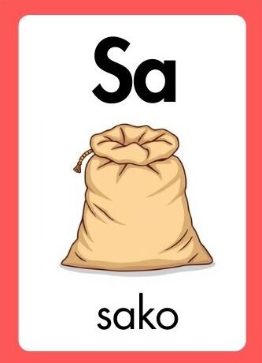
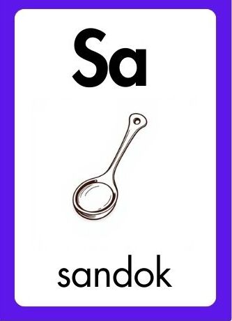
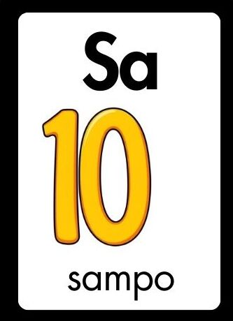
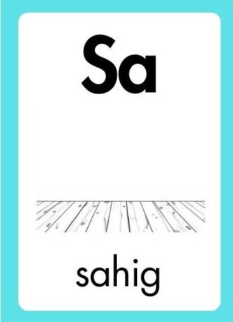

Pagtuunan ng pansin ang mga pangunahing hakbang sa proseso ng pagbasa upang mapalalim ang iyong pag-unawa sa mga aralin. Ang bawat hakbang ay magbibigay gabay sa iyong pag-intindi ng mga ideya at konsepto. Ipagpatuloy ang iyong pag-aaral upang lalo pang mapabuti ang iyong kasanayan sa pagbabasa.




HALINA AT BASAHIN ANG MGA PANGUNGUSAP NA MAY "SA"
Maglaan ng oras upang pagtuunan ang mga pangunahing hakbang sa pagbasa na makakatulong sa pagpapalalim ng iyong pag-unawa sa mga aralin. Ang bawat hakbang ay magsisilbing gabay sa pag-intindi ng mga ideya at konsepto. Patuloy na mag-aral upang mapabuti pa ang iyong kasanayan sa pagbabasa.